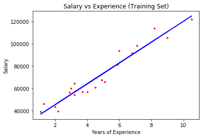
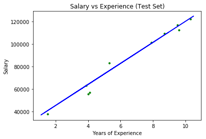

❀ Ｓｉｍｐｌｅ Ｌｉｎｅａｒ Ｒｅｇｒｅｓｓｉｏｎ Ｅｑｕａｔｉｏｎ：
ｙｉ ＝ ｂ０ ＋ ｂ１ｘｉ
❀ Ｓｃｅｎａｒｉｏ：
As a data scientist in HR department, you are given a dataset
containing info of 30 employees in your company, with each employee's years of experience in workplace and current salary.
By analyzing this data, you are asked to construct an algorithm to estimate a salary to be offered to a new hire
according to her/his years of experience.
❀ Ａｐｐｒｏａｃｈ：
✣ Independent Variable(x): Years of Experience
✣ Dependent Variable(y): Salary
✣ 30 datapoints were randomly split into:
⋆ 20 training points- to fit Simple Linear Regression with the points' x&y values
⋆ 10 test points- to test if the fitted model's salary predictions are close to the actual
salary values
❀ Ｐｙｔｈｏｎ Ｃｌａｓｓｅｓ Ｕｓｅｄ：
✣ (from sklearn.model_selection) train_test_split
✣ (from sklearn.linear_model) LinearRegression
❀ Ｒ Ｐａｃｋａｇｅｓ／Ｃｌａｓｓｅｓ Ｕｓｅｄ：
✣ lm
✣ caTools
✣ ggplot2
❀ Ｉｍｐｌｅｍｅｎｔａｔｉｏｎ ｉｎ Ｐｙｔｈｏｎ ＆ Ｒ：
*Try running the Python code & insert the new employee's years of experience to get an estimate of the Salary!*
https://github.com/lukysummer/Simple-Linear-Regression
❀ Ａｃｃｕｒａｃｙ：
✣ Training Accuracy: 0.9381900012894278
✣ Test Accuracy: 0.9749154407708353
❀ ＲＥＳＵＬＴＳ：

The graph above shows the scatter plot of the training points (red dots) & the simple linear regression line
(blue line) fitted by the training points. To predict the salary of the new employee with known years of experience
(x value), one can locate the y value of the corresponding point on the line.

The graph above shows the scatter plot of the test points (green dots) & the simple linear regression line
(blue line) fitted by the training points. It can be seen that the test points lie relatively close along the
linear regression line, thus reassuring the test accuracy (~97.4%) of the regression.